The 8051 Microcontroller is 40 pin DIP IC designed by Intel in 1981. This is an
8-bit microcontroller. It is a very famous Microcontroller of Intel family.
These kinds of microcontrollers are used in different appliances like
televisions, washing machines, telephones or some other electronic gadgets.
The microcontroller is more complex than microprocessors based on their
architecture. The first generation Intel Microcontroller was 8048. The 8051
is successor of that. So it is treated as the second generation microcontroller.
8051 belongs to MCS-51 family of Intel Micro controllers. In this section, we
will discuss various topics on 8051 Microcontroller.
Introduction to AT8051
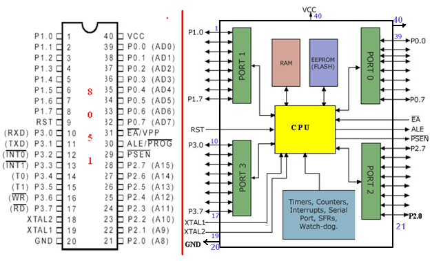Pins and Functional block diagram of 8051 Microcontroller
Features of 8051 Microcontroller
8-bit CPU microcontroller, means MC 8051 can Read, Write and Process 8 bit data.
16-bit Program Counter.
8-bit Program Status Word (PSW).
8-bit Stack Pointer.
128 bytes on-chip data memory (RAM)
Special Function Registers (SFRs) of 128 bytes.
32 I/O pins arranged as four 8-bit ports (P0 - P3)
Two 16-bit timer/counters : T0 and T1 .
4KB bytes on-chip program memory (ROM)
Four register banks.
One full duplex serial I/O.
Three internal and two external Interrupts.
8051 Flavors / Members:
Some of the microcontrollers of 8051 family are given
as follows:
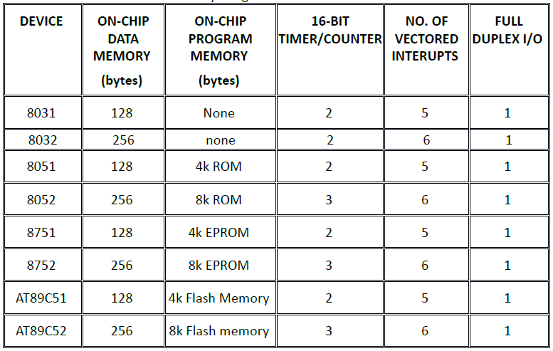Fig: 8051 series MCU features comparison
8051 MCU Architecture
Irrespective of the manufacturer, the internal hardware design i.e. the 8051
Microcontroller Architecture remains more or less the same. The following
image shows the 8051 Microcontroller Architecture in a block diagram style.
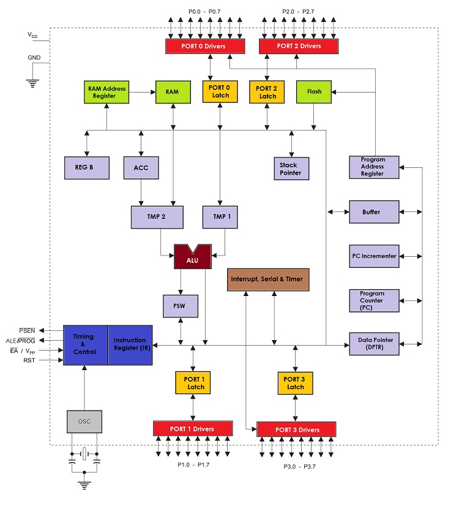Fig: 8051 Microcontroller Architecture
The block diagram of the 8051 Microcontroller Architecture shows that 8051 Microcontroller
consists of a CPU, RAM (SFRs and Data Memory), Flash (EEPROM), I/O Ports and control logic
for communication between the peripherals.
All these different peripherals inside the 8051 Microcontroller will communicate
with each other via the 8 – bit Data Bus, also known as the internal data bus.
Memory and Register organization of 8051 MCU
The 8051 has a separate memory space for code (programs) and data. We will refer here to
on-chip memory and external memory as shown in figure below:
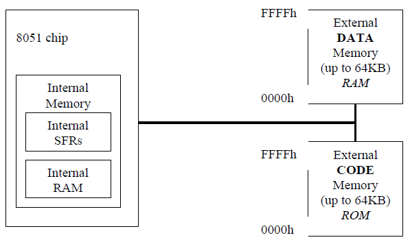Fig: 8051 Microcontroller Memory
External Code Memory
The executable program code is stored in this code memory. The code memory size
is limited to 64KB (in a standard 8051). The code memory is read-only in normal
operation and is programmed under special conditions e.g. it is a PROM or a Flash
RAM type of memory.
External RAM Data Memory
This is read-write memory and is available for storage of data. Up to 64KB of
external RAM data memory is supported (in a standard 8051).
Internal Memory
The 8051’s on-chip memory consists of 256 memory bytes organised as follows:
The first 128 bytes of internal memory is organised as shown in figure
below, and is referred to as Internal RAM, or IRAM.
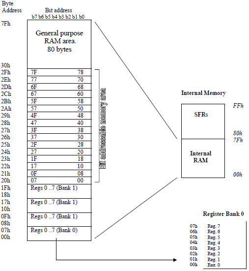Fig: Organisation of Internal RAM (IRAM) memory
Register Banks: 00h to 1Fh
The 8051 uses 8 general-purpose registers R0 through R7 (R0, R1, R2, R3, R4, R5, R6, and R7).
These registers are used in instructions such as:
ADD A, R2 ; adds the value contained in R2 to the accumulator
Note since R2 happens to be memory location 02h in the Internal RAM the following instruction has the same effect as the above instruction.
ADD A, 02h
Now, things get more complicated when we see that there are four banks of
these general-purpose registers defined within the Internal RAM. For the moment
we will consider register bank 0 only. Register banks 1 to 3 can be ignored when
writing introductory level assembly language programs.
Bit Addressable RAM: 20h to 2Fh
The 8051 supports a special feature which allows access to bit variables.
This is where individual memory bits in Internal RAM can be set or cleared.
In all there are 128 bits numbered 00h to 7Fh. Being bit variables any one
variable can have a value 0 or 1. A bit variable can be set with a command
such as SETB and cleared with a command such as CLR. Example instructions are:
SETB 25h ; sets the bit 25h (becomes 1)
CLR 25h ; clears bit 25h (becomes 0)
Note, bit 25h is actually bit b5 of Internal RAM location 24h.
The Bit Addressable area of the RAM is just 16 bytes of Internal RAM
located between 20h and 2Fh. So if a program writes a byte to location 20h,
for example, it writes 8 bit variables, bits 00h to 07h at once.
Note bit addressing can also be performed on some of the SFR registers, which will
be discussed later on.
General Purpose RAM: 30h to 7Fh
General Purpose Registers (R Registers)
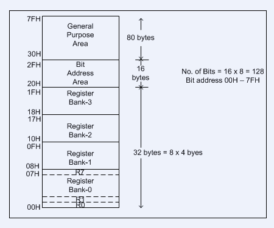Fig: GPR register layout
Address: 0x00 to 0x1F
Size : 8 Bit
Byte addressable.
32 General Purpose Registers.
Grouped in to 4 register banks.
Each bank has 8 registers R0 to R7.
Only 8 registers (one bank) can be directly accessed at a time.
Program can select any of the 4 register banks for it use through Program Status Word (PSW) Register.
Register bank 0 is used by default.
These auxiliary registers are generally used to assist in manipulating
values and moving data from one memory location to another.
Used to temporarily store values.
These 80 bytes of Internal RAM memory are available for general-purpose data storage. Access to this
area of memory is fast compared to access to the main memory and special instructions with single
byte operands are used. However, these 80 bytes are used by the system stack and in practice
little space is left for general storage. The general purpose RAM can be accessed using direct
or indirect addressing modes. Examples of direct addressing:
MOV A, 6Ah ; reads contents of address 6Ah to accumulator
Examples for indirect addressing (use registers R0 or R1):
MOV R1, #6Ah ; move immediate 6Ah to R1
MOV A, @R1 ; move indirect: R1 contains address of Internal RAM which contains data that is moved to A.
These two instructions have the same effect as the direct instruction above.
Special Function Registers (SFR)
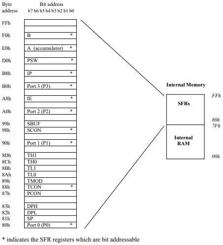Fig: SFR register layout
Address 0x00 to 0xFF
There are 21 SFRs in standard 8051. (while 128 byes of the SFR address space available)
SFRs control special functionality of 8051
Allows configuring and controlling peripherals.
SFRs are accessed as if they were normal internal RAM.
Each SFR has an address and a name which reflects the purpose of that SFR.
SFRs are grouped in three categories:
I/O Ports SFR (PORT0, PORT1, PORT2, PORT3)
Control SFR: (TCON, TMOD, PCON, SCON, IE, IP, PSW )
Each registers is mapped to corresponding I/O Port. And I/O Pins can be accessed using these registers.
For example Port 0 is a physical 8 bit I/O port on the 8051. Read (input)
and write (output) access to this port is done in software by accessing
the SFR P0 register which is located at address 80h. SFR P0 is also bit
addressable. Each bit corresponds to a physical I/O pin on the 8051.
Example access to port 0:
SETB P0.7 ; sets the MSB bit of Port 0
CLR P0.7 ; clears the MSB bit of Port 0
The operand P0.7 uses the dot operator and refers to bit 7 of SFR P0.
The same bit could be addressed by accessing bit location 87h.
Thus the following two instructions have the same meaning:
CLR P0.7
CLR 87h
PSW Program Status Word
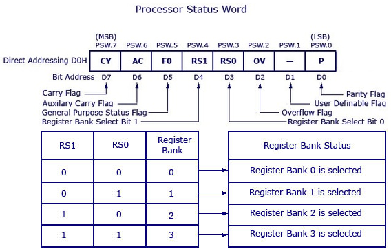Fig: Program status word (PSW) flags
Also known as Flag Register
Address: 0xD0
Size : 8 Bit
Bit and Byte addressable.
Contains 6 Flag Bits and 2 user definable bits.
Flag bits indicate some conditions that resulted after an instruction was executed.
Carry flag. C :This is a conventional carry, or borrow, flag used in arithmetic
operations. The carry flag is also used as the ‘Boolean accumulator’ for Boolean instruction
operating at the bit level. This flag is sometimes referenced as the CY flag.
Auxiliary carry flag. AC :This is a conventional auxiliary carry
(half carry) for use in BCD arithmetic.
Flag 0. F0 :This is a general-purpose flag for user programming.
Register bank select 0 and register bank select 1. RS0 and RS1 :
These bits define the active register bank (bank 0 is the default register bank).
Overflow flag. OV :This is a conventional overflow bit for
signed arithmetic to determine if the result of a signed arithmetic operation is out of range.
Even Parity flag. P :The parity flag is the accumulator parity flag,
set to a value, 1 or 0, such that the number of ‘1’ bits in the accumulator plus the parity
bit add up to an even number.
Stack Pointer
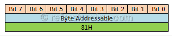Fig: Stack Pointer Register
Address : 0x81H
Size : 8 Bit
Byte Addressable
Contains the address of the data item on top of the stack.
Used by subroutine call and return instructions.
Stack, in user space of internal RAM, grows upward; the SP is
incremented before pushing and after popping a value.
By default, SP is initialized to 0x07H
User can initialize SP to desired location.
Depending on the initial value of SP, 8051 stack can have different sizes.
If register banks 1 to 3 are to be used the SP SFR should be initialised to start
higher up in Internal RAM. The following instruction is often used to initialise the stack:
MOV SP, #2Fh
Data Pointer
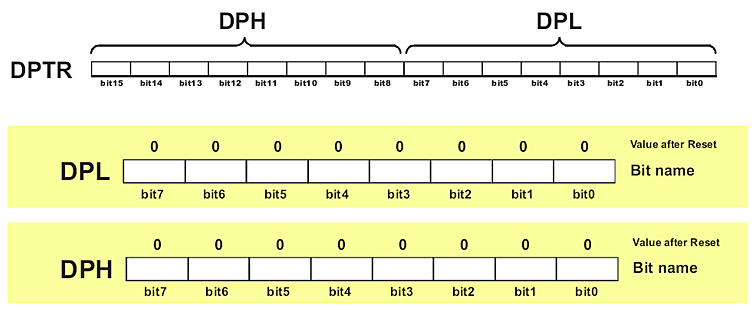Fig: Associated Registers with Data Pointer.
0x83 - 0x82
Size : 16 Bit
Since the SFR registers are just 8-bits wide the DPTR is stored in two SFR registers, where DPL (82h) holds
the low byte of the DPTR and DPH (83h) holds the high byte of the DPTR.
Byte and Word Addressable
Used to point data.
Used to access external data and code memory.
8051 will access external memory at the address indicated by DPTR.
DPTR holds the memory addresses for internal and external code access and
external data access (eg. MOVC A,@A+DPTR MOVX A,@DPTR MOVX @DPTR,A )
Often used to point to data in external memory.
It's the only user accessible 16-bit register.
Can be used as temporary storage.
Can also be used as two 8-bit registers. DPH #8211; 0x83, DPL #8211; 0x82.
MOV DPTR, #2550H is same as
MOV DPL, #50H
MOV DPH, #25H
For example, if you wanted to write the value 46h to external data memory location 2500h,
you might use the following:
MOV A, #46h ; Move immediate 8 bit data 46h to A (accumulator)
MOV DPTR, #2504h ; Move immediate 16 bit address value 2504h to A.
; Now DPL holds 04h and DPH holds25h.
MOVX @DPTR, A ; Move the value in A to external RAM location 2500h. Uses indirect addressing.
Note the MOVX (Move X) instruction is used to access external memory.
Accumulator
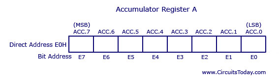Fig: Accumulator or Working Register
Called as Accumulator or Acc or Working or A Register.
Address: 0xE0
Size : 8 Bit
Bit and Byte addressable.
holds the results of many arithmetic and logical operation of 8051.
Used as a general register to store the result of a large number of instructions.
Used for all mathematical operations.
Used for data transfer operation between CPU and any external memory.
This is the conventional accumulator that one expects to find in any computer,
which is used to the hold result of various arithmetic and logic operations. Since
the 8051 microcontroller is just an 8-bit device, the accumulator is, as expected,
an 8 bit register. The accumulator, referred to as ACC or A, is usually accessed
explicitly using instructions such as:
INC A ; Increment the accumulator
However, the accumulator is defined as an SFR register at address E0h. So the
following two instructions have the same effect:
MOV A, #52h ; Move immediate the value 52h to the accumulator
MOV E0h, #52h ; Move immediate the value 52h to Internal
RAM location E0h, which is, in fact, the accumulator SFR register.
Usually the first method, MOV A, #52h, is used as this is the most
conventional (and happens to use less space, 2 bytes as oppose to 3 bytes!)
B Register
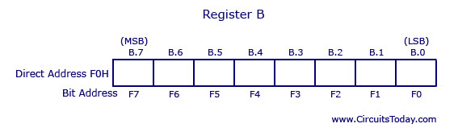Fig: B Register
Called as Accumulator or Acc or Working or A Register.
Address: 0xF0
Size : 8 Bit
Bit and Byte addressable.
Used as an extension to the Accumulator for multiply and divide instruction.
Used along with A register.
Used by MUL AB and DIV AB instruction.
MUL AB: Multiplies 8-bit unsigned values in A and B and leaves the 16-bit result in A (low byte) and B (high byte).
DIV AB: divided A by B, leaving the integer result in A and remainder in B.
The B register can also be used as a general-purpose register.
Program Counter
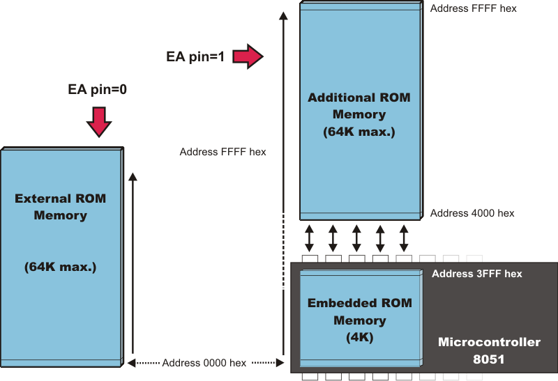Fig: Program Counter
The only register that is not memory mapped in 8051.
Size : 16 Bit (2 Byte)
Always contains the memory address of the next instruction to be executed.
After execution of one instruction PC is incremented to point to the address of the next instruction to be executed.
If a 2 byte instruction is executed the PC is incremented by 2 and if a 3 byte instruction
is executed the PC is incremented by three so as to correctly point to the next instruction to be executed.
A jump instruction (e.g. LJMP) has the effect of causing the program to branch to
a newly specified location, so the jump instruction causes the PC contents to change
to the new address value. Jump instructions cause the program to flow in a non-sequential
fashion, as will be described later.
PC will increase automatically.
The content of PC will be placed on the address bus to find and fetch the desired instruction.
User can not write in PC.
Since PC is 16 Bit 8051 can access program address from 0X0000 to 0XFFFF i.e. up to 64 KB.
When the 8051 is reset the PC is always initialised to 0000h of the program memory
and is incremented each time an instruction is executed.
The first instruction must be placed at 0X0000 of program memory.
SFR Registers for the Internal Timer
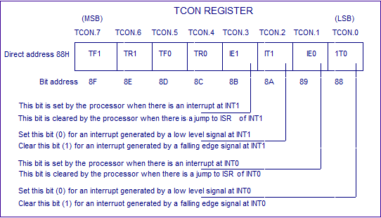Fig: Timer Control Register
Address : 0x88
Size : 8 Bit
Bit and Byte Addressable
Used to configure and control 8051 Timers.
The set up and operation of the on-chip hardware timers will be described later,
but the associated registers are briefly described here:
TMOD - Timer Mode Register
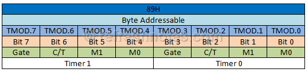Fig: Timer Mode Control Register
Address : 0x89
Size : 8 Bit
Byte Addressible
Used to configure and control 8051 Timers.
Power Control Register
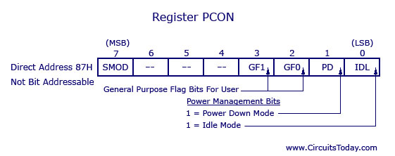Fig: Power Control Register
Address : 0x87
Size : 8 Bit
Byte Addressible
Used to control 8051 power modes.
It contains various control bits including a control bit, which allows the 8051 to go
to ‘sleep’ so as to save power when not in immediate use.
Serial Port Registers
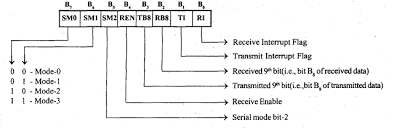Fig: Serial Control Register
Programming of the on-chip serial communications port will be described later in the text.
The associated SFR registers, SBUF and SCON, are briefly introduced here, as follows:
The SCON (Serial Control) is an SFR register located at addresses 98h, and it is bitaddressable.
SCON configures the behaviour of the on-chip serial port, setting up
parameters such as the baud rate of the serial port, activating send and/or receive data,
and setting up some specific control flags.
The SBUF (Serial Buffer) is an SFR register located at address 99h. SBUF is just a
single byte deep buffer used for sending and receiving data via the on-chip serial port
Interrupt Registers
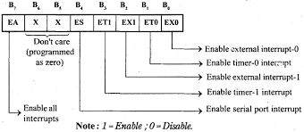Fig: Interrupt Control Register
Address : 0xA8
Size : 8 Bit
Byte & Bit Addressible
Used to Enable and Disable Interrupts.
Interrupts will be discussed in more detail later. The associated SFR registers are:
IE (Interrupt Enable) is an SFR register at addresses A8h and is used to enable
and disable specific interrupts. The MSB bit (bit 7) is used to disable all interrupts.
IP (Interrupt Priority) is an SFR register at addresses B8h and it is bit addressable.
The IP register specifies the relative priority (high or low priority) of
each interrupt. On the 8051, an interrupt may either be of low (0) priority or high (1) priority.

 Fig: Interrupt Priority Control Register
Fig: Interrupt Priority Control Register